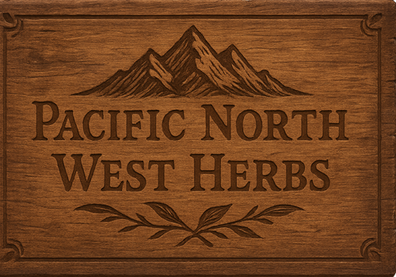

Home

agoseris
arrow-leaved balsamroot
arrowhead
asparagus
beargrass
bedstraw (aka cleavers)
bistort
bittercress
bitterroot
bracken
bugleweed
bulrush
burdock
camas (aka blue camas)
catnip
cattail
chickweed
chicory
chufa
clover
cocklebur
coltsfoot
common orache
common sweet clover
cow-lily
dandelion
devils club
dock
elephanthead lousewort
false solomon's-seal
fireweed
fleabane
fragrant water-lily
garden orache
goldenrod
ground ivy
groundcone
high mallow
indian pipe (aka ghost plant)
jerusalem artichoke
knotweed
lamb's quarter (aka pigweed)
largeflower triteleia
mariposa-lily
marsh-marigold
miner's lettuce
mountain sorrel
musk mallow
mustard
northern water plantain
oxeye daisy
pearly everlasting
peppergrass
pickleweed (aka glasswort, sea asparagus)
pigweed
pineapple-weed
plantain
prickly-pear cactus
queen's cup
quickweed
roseroot
salsify (aka goatsbeard, oyster plant)
sea milkwort (aka sea milkweed)
self heal
sheep sorrel
shepherd's-purse
siberian miner's lettuce
silver orache
silverweed (aka cinquefoil)
sow thistle
speedwell (aka brooklime, gypsyweed)
stinging nettle
stonecrop
stork's-bill
strawberry-blite
sunflower
swamp hedge-nettle (aka marsh woundwort)
sweet gale (aka bog myrtl)
sweetflag
thistle
tiger lily (aka columbia lily)
violet
watercress
wild bergamot (aka horsemint)
wild licorice
wild mint
wild rose
wood lily
woodsorrel
yellow glacier-lily (aka snow-lily)
yellowcress